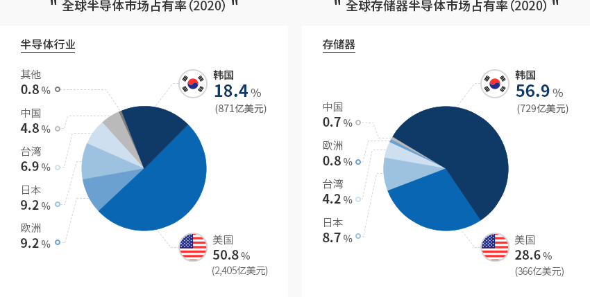
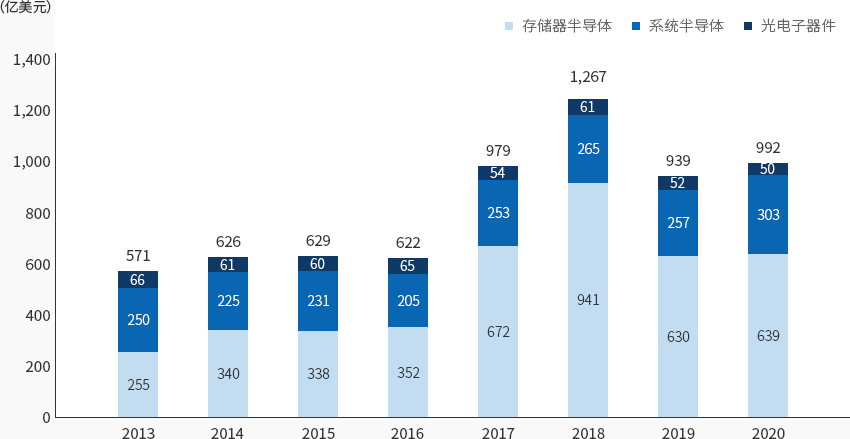
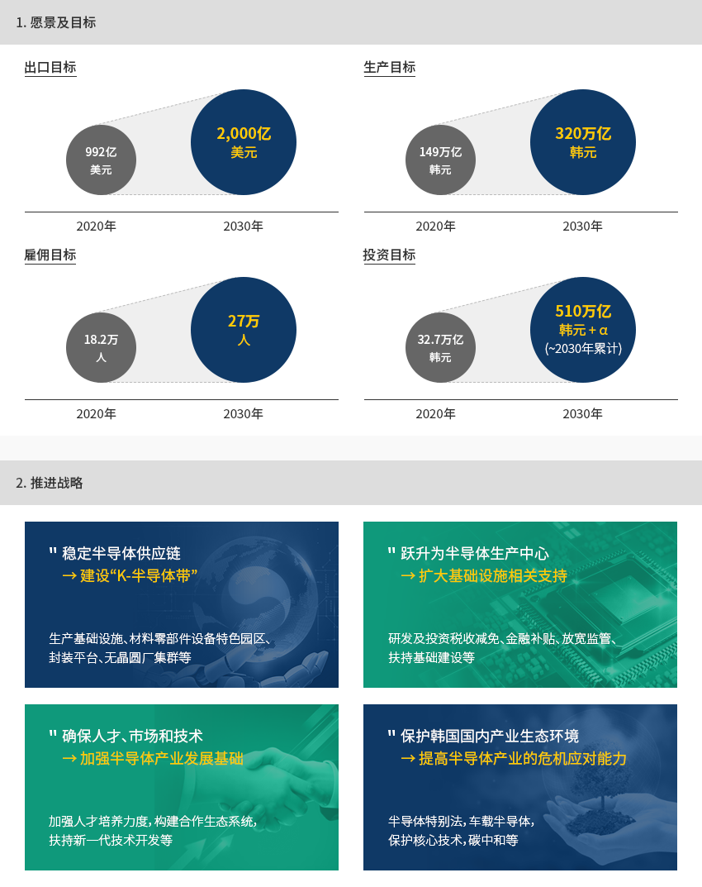
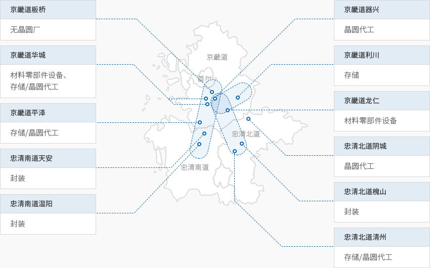

半导体
- Home
- Why KOREA
- 产业
- 半导体
-
存储器半导体世界第一 综合半导体世界第二 关闭内容存储器半导体世界第一 综合半导体世界第二2020年，韩国半导体的世界市场占有率为18.4%，自2013年以来一直保持着世界第二的排名。
尤其在存储器半导体领域，韩国占有率高达56.9%，其中DRAM、NAND的占有率分别为71.1%和44.9%。
韩国拥有世界顶级水平的存储器半导体技术实力，为保持竞争优势，一直着重开展持续性研发和投资。
不仅如此，韩国凭借超微加工技术，正不断提高晶圆代工（Foundry）市场占有率。全球半导体市场占有率（2020） 半导体行业- 韩国 18.4%(871亿美元)
- 美国 50.8%(2,405亿美元)
- 日本 9.2%
- 欧洲 9.2%
- 台湾 6.9%
- 中国 4.8%
- 其他 0.8%
全球存储器半导体市场占有率（2020） 存储器- 韩国 56.9%(729亿美元)
- 美国 28.6%
- 日本 8.7%
- 台湾 4.2%
- 欧洲 0.8%
- 中国 0.7%
 ※ 资料来源：OMDIA 2021
※ 资料来源：OMDIA 2021 -
主导韩国国家经济的 最大出口品类 打开内容主导韩国国家经济的 最大出口品类2020年韩国半导体销售总额为992亿美元，其中，存储器半导体销售额为639亿美元，占半导体销售总额的64.4%。
同时，半导体是韩国出口量最大的商品类别，2020年占整体出口的19.3%，引领着韩国经济和产业。"韩国半导体出口趋势"(单位: 亿美元)韩国半导体出口趋势 年度, 存储器半导体 , 系统半导体 , 光电子器件 分类 2013 2014 2015 2016 2017 2018 2019 2020 存储器半导体 255 340 338 352 672 941 630 639 系统半导体 250 225 231 205 254 265 257 303 光电子器件 66 61 60 65 54 61 52 50 合计 571 626 629 622 979 1,267 939 992
-
世界材料、零部件、设备企业 加大力度进军韩国半导体市场 打开内容世界材料、零部件、设备企业 加大力度进军韩国半导体市场半导体是韩国的主要产业，诸多以半导体为基础的材料、零部件、设备领域跨国企业进驻韩国。
美国泛林半导体(Lam Research)是一家从事制造半导体蚀刻及蒸镀设备的公司。自2011年在韩国设立韩国泛林制造以来，
泛林持续提升韩国国内生产量。2019年，第5000台韩国产设备出厂。不仅如此，位于京畿道龙仁市的泛林研究开发中心于年末正式开业。今后，
将在韩国开发集团核心技术和设备，重点致力于升级韩国国内生态系统。台湾硅晶片制造商环球晶片（Global wafers）也在韩国设立子公司MEMC韩国。
2019年第二座工厂竣工，12英寸晶圆正式投产。独家供应高科技EUV光刻机的阿斯麦（ASML）计划在华城建设高科技EUV集群，东京应化（TOK）、
杜邦（DuPont）、默克（Merck）等半导体材料企业正在扩大在韩生产投资。
汽车半导体厂商安森美（ON Semiconductor）也计划扩大在韩投资，以响应电动汽车市场的增长。
-
发布《K-半导体战略》 建设综合半导体强国 打开内容发布《K-半导体战略》 建设综合半导体强国韩国政府陆续发布《系统半导体发展战略（2019年4月）》、《人工智能半导体产业发展战略（2020年10月）》、
《K-半导体战略（2021年5月）》等文件，强烈希望发展存储器半导体及系统半导体领域，建设综合半导体强国预计到2030年建设全球第一的半导体供应链，将投资税额抵扣率最高到5倍以上（6～10%），
新设超过1万亿韩元的“半导体等设备投资特别资金”，为晶圆代工、材料-零部件-设备、封装设施提供投资支持。此外，还将加大政府支持力度，让半导体生产设施相关监管趋于合理，并建设水和电力等基础设施。"愿景：2030年建成全球顶级半导体供应链"-
1. 愿景及目标
- 出口目标 : 20年(992亿 美元) > 30年(2,000亿 美元)
- 生产目标 : 20年(149万亿 韩元) > 30年(320万亿 韩元)
- 雇佣目标 : 20年(18.2万人) > 30年(27万人)
- 投资目标 : 20年(32.7万亿 韩元) > 30年(510万亿 韩元 + α)(~’30누계)
-
2. 推进战略
- 稳定半导体供应链→建设“K-半导体带”: 生产基础设施、材料零部件设备特色园区、封装平台、无晶圆厂集群等
- 跃升为半导体生产中心→ 扩大基础设施相关支持: 研发及投资税收减免、金融补贴、放宽监管、扶持基础建设等
- 确保人才、市场和技术→ 加强半导体产业发展基础: 加强人才培养力度，构建合作生态系统，扶持新一代技术开发等
- 保护韩国国内产业生态环境→提高半导体产业的危机应对能力: 半导体特别法，车载半导体，保护核心技术，碳中和等
-
1. 愿景及目标
-
以三星电子、SK海力士为中心的 半导体集群 打开内容以三星电子、SK海力士为中心的 半导体集群韩国半导体工厂集中分布在京畿道地区，少部分在忠清北道、忠清南道等地区。
通过将板桥-器兴-华城-平泽-温阳地区和利川-清州地区对接到龙仁，韩国即将建成世界最大规模的半导体供应链——“K半导体带”。三星电子已在京畿道的水原市、龙仁市器兴区、华城市设立了工厂，并计划在平泽市建厂，
建设世界最大规模的半导体生产区。SK海力士将在京畿道龙仁市建设448万平方米的半导体集群，计划于2021年动工，
2024年正式投入量产。还将在龙仁集群建设材料-零部件-设备特色园区，推动超大型合作模式，
由供需双方联合开发关键的材料-零部件-设备产品。此外，板桥地区将建设韩国式芯片设计（Fabless）谷，中部地区将依托晶圆代工生产基础和封装工艺基础，
建设高科技封装特色创新基地。"K-半导体带"- 京畿道板桥: 无晶圆厂
- 京畿道华城: 材料零部件设备、存储/晶圆代工
- 京畿道平泽: 存储/晶圆代工
- 忠清南道天安: 封装
- 忠清南道温阳: 封装
- 京畿道器兴: 晶圆代工
- 京畿道利川: 存储
- 京畿道龙仁: 材料零部件设备
- 忠清北道阴城: 晶圆代工
- 忠清北道槐山: 封装
- 忠清北道清州: 存储/晶圆代工


Invest KOREA
半导体/显示器项目经理
朴東栗
基干产业引进组
T.+82-2-3460-7726
选址信息推荐
产业园区信息
[Gyeonggi-do Suwon City] Suwon Deltaplex (Block 3)
Click [Go to Detailed Information] to go to the relevant information screen of
Smart K-Factory service of Industrial Complex Corporation.
-
Complex nameSuwon Deltaplex (Block 3)
-
Initial designation date2008.12.26
-
Designated area(m2)847,409
-
ManagementGyeonggi-do Suwon City
-
Nearby RailwaySuwon Station
-
Distance from station(km)4
-
Nearby AirportGimpo International Airport
-
Distance from airport(km)49
-
Industrial water Supply capacity(ton/day)3195(㎥/day)
-
Affiliation local governmentGyeonggi-do Suwon City
-
Population1,190,074
产业园区信息
[Gyeonggi-do Seongnam City] Pangyo 2nd Techno Valley[formerly: Pangyo
Creative Economy Valley]
Click [Go to Detailed Information] to go to the relevant information screen of
Smart K-Factory service of Industrial Complex Corporation.
-
Complex namePangyo 2nd Techno Valley[formerly: Pangyo Creative Economy Valley]
-
Initial designation date2015.11.30
-
Designated area(m2)430,402
-
ManagementGyeonggi-do Seongnam City
-
Nearby RailwayOksu Station
-
Distance from station(km)19
-
Nearby AirportGimpo International Airport
-
Distance from airport(km)45
-
Industrial water Supply capacity(ton/day)2025(㎥/day)
-
Affiliation local governmentGyeonggi-do Seongnam City
-
Population940,668
产业园区信息
[Gyeonggi-do Hwaseong City] Hwaseong Songsan Techno Park General Industrial
Complex
Click [Go to Detailed Information] to go to the relevant information screen of
Smart K-Factory service of Industrial Complex Corporation.
-
Complex nameHwaseong Songsan Techno Park General Industrial Complex
-
Initial designation date2016.12.26
-
Designated area(m2)528,723
-
ManagementHwaseong Urban Corporation
-
Nearby RailwaySuwon Station
-
Distance from station(km)34
-
Nearby AirportGimpo International Airport
-
Distance from airport(km)59
-
Industrial water Supply capacity(ton/day)2,034(㎥/day)
-
Affiliation local governmentGyeonggi-do Hwaseong City
-
Population842,864
产业园区信息
[Gyeonggi-do Gunpo City] Gunpo High-tech Industrial Complex
Click [Go to Detailed Information] to go to the relevant information screen of
Smart K-Factory service of Industrial Complex Corporation.
-
Complex nameGunpo High-tech Industrial Complex
-
Initial designation date2013.12.27
-
Designated area(m2)287,619
-
ManagementGyeonggi-do Gunpo City
-
Nearby RailwaySuwon Station
-
Distance from station(km)10
-
Nearby AirportGimpo International Airport
-
Distance from airport(km)38
-
Industrial water Supply capacity(ton/day)1,376(㎥/day)
-
Affiliation local governmentGyeonggi-do Gunpo City
-
Population275,508
产业园区信息
[Chungcheongbuk-do Jeungpyeong County] Jeungpyeong 2nd General Industrial
Complex
Click [Go to Detailed Information] to go to the relevant information screen of
Smart K-Factory service of Industrial Complex Corporation.
-
Complex nameJeungpyeong 2nd General Industrial Complex
-
Initial designation date2009.11.20
-
Designated area(m2)702,807
-
ManagementChungcheongbuk-do Jeungpyeong County
-
Nearby RailwayJeungpyeong Station
-
Distance from station(km)6
-
Nearby AirportCheongju International Airport
-
Distance from airport(km)17
-
Industrial water Supply capacity(ton/day)3,348(㎥/day)
-
Affiliation local governmentChungcheongbuk-do Jeungpyeong County
-
Population81,949
产业园区信息
[Gyeonggi-do Pyeongtaek City] LG Digital Park General Industrial Complex
Click [Go to Detailed Information] to go to the relevant information screen of
Smart K-Factory service of Industrial Complex Corporation.
-
Complex nameLG Digital Park General Industrial Complex
-
Initial designation date2012.04.26
-
Designated area(m2)125,312
-
ManagementGyeonggi-do Pyeongtaek City
-
Nearby RailwayOsan Station
-
Distance from station(km)22
-
Nearby AirportGimpo International Airport
-
Distance from airport(km)72
-
Industrial water Supply capacity(ton/day)-
-
Affiliation local governmentGyeonggi-do Pyeongtaek City
-
Population527,166